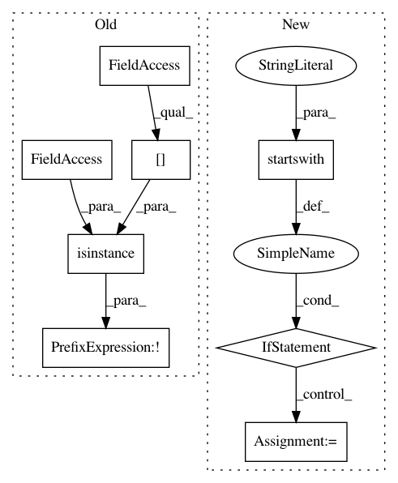

93c123daee0241845c3e7f6452f91ab2d3d144c8,benchmark/opperf/utils/ndarray_utils.py,,nd_forward_backward_and_profile,#Any#Any#,23
Before Change
for _ in range(runs):
with mx.autograd.record():
if not isinstance(args[0], nd.NDArray):
res = op(**kwargs)
else:
res = op(*args, **kwargs)
After Change
kwargs_new = dict()
for key in kwargs:
// separate positional args from key-worded args
if key.startswith("args"):
args.append(kwargs[key])
else:
kwargs_new[key]=kwargs[key]
// check for positional args
if len(args):
res = op(*args, **kwargs_new)
else:
res = op(**kwargs_new)
In pattern: SUPERPATTERN
Frequency: 3
Non-data size: 8
Instances
Project Name: apache/incubator-mxnet
Commit Name: 93c123daee0241845c3e7f6452f91ab2d3d144c8
Time: 2020-02-12
Author: chai.bapat@gmail.com
File Name: benchmark/opperf/utils/ndarray_utils.py
Class Name:
Method Name: nd_forward_backward_and_profile
Project Name: vatlab/SoS
Commit Name: c927fb8e3d13d8f6de93fc114f03834d4d08fc3d
Time: 2017-07-18
Author: ben.bog@gmail.com
File Name: src/sos/Matlab/kernel.py
Class Name: sos_Matlab
Method Name: get_vars
Project Name: apache/incubator-mxnet
Commit Name: 93c123daee0241845c3e7f6452f91ab2d3d144c8
Time: 2020-02-12
Author: chai.bapat@gmail.com
File Name: benchmark/opperf/utils/ndarray_utils.py
Class Name:
Method Name: nd_forward_and_profile